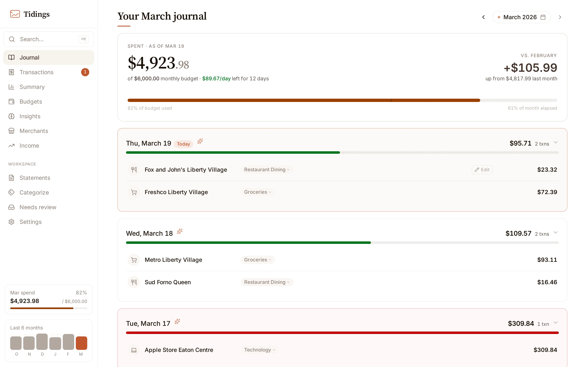

Your bank already emails you every transaction.
Tidings turns those emails into a private spending journal.
Transaction alert · RBC
Loblaws Queen West
$84.17
Card purchase · CIBC
Tim Hortons King & Strachan
$7.63
Deposit notice · Simplii
Payroll deposit
$2,184.55
Tue, March 17
$91.80
Loblaws Queen West
· Groceries
$84.17
Tim Hortons King & Strachan
· Restaurant Dining
$7.63
No Plaid.
No credentials shared.
No manual entry.

Groceries is $14 over ceiling.
Open source. Self-hosted.
Runs on your machine, from the emails you already receive.
Your spending, delivered.
gettidings.com · demo at gettidings.com/demo